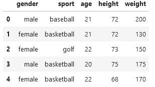
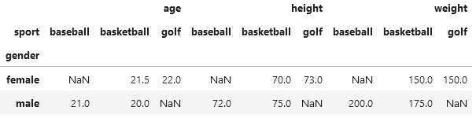
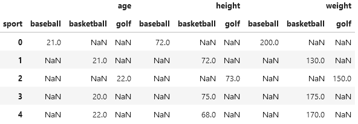
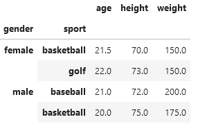
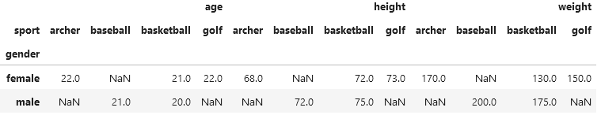

Pandas
pivot_table, pivot и groupby
У нас есть небольшой датасет из 5 студентов
students = pd.DataFrame(
{"gender": ["male", "female", "female", "male", "female"],
"sport": ["baseball", "basketball", "golf", "basketball", "basketball"],
"age": [21, 21, 22, 20, 22],
"height": [72, 72, 73, 75, 68],
"weight": [200, 130, 150, 175, 170]
}
)

<class 'pandas.core.frame.DataFrame'>
RangeIndex: 5 entries, 0 to 4
Data columns (total 5 columns):
# Column Non-Null Count Dtype
--- ------ -------------- -----
0 gender 5 non-null object
1 sport 5 non-null object
2 age 5 non-null int64
3 height 5 non-null int64
4 weight 5 non-null int64
dtypes: int64(3), object(2)
memory usage: 332.0+ bytes
Pivot Table
Давайте передадим столбец «gender» в параметр индекса (результирующий левый столбец), передайте параметр столбца, равный «спорт», и нашим параметром значений (данные в полученных ячейках) будут «возраст», «рост» и «вес».
Я явно ввел aggfunc в значение «mean», которое является значением по умолчанию, если оно не установлено явно. Мы сохраним результат в Student_pivot_tab для удобства использования. Вызов функции Pivot_table для нашего исходного фрейма данных, результаты таблицы:
student_pivot_tab = students.pivot_table( index='gender', columns='sport', values=['age','height','weight'], aggfunc='mean')
student_pivot_tab

Как мы и указывали, gender значения теперь находятся в крайнем левом столбце.
Значения из предыдущего столбца sport теперь являются заголовками столбцов.
Значения в ячейках представляют собой средние значения столбцов возраста, роста и веса.
Note
’NaN вставляются там, где значений нет. Например, в этом наборе данных нет женщин-бейсболисток.
Довольно круто! Теперь мы видим только 2 строки данных, которые агрегируются для данных.
Pivot
Хорошо, давайте сделаем то же самое с функцией Pivot.
student_pivot = students.pivot(index='gender', columns='sport', values=['age','height','weight'])
Это приводит к ошибке:
ValueError: Index contains duplicate entries, cannot reshape
Что это значит? Давайте попробуем ту же команду без аргумента индекса.
Без явно заданного индекса мы получим следующие результаты:

В результате появляются столбцы sport, но не столбцы gender. Обратите внимание, что фрейм данных имеет индекс нашего исходного фрейма данных (0…4),
который находится там по умолчанию. Также есть NaN, введенные для значений, которых не существует, поскольку мы транспонировали строки в столбцы.
Вернемся к ошибке:
ValueError: Index contains duplicate entries, cannot reshape
Когда в сводной таблице индекс установлен на gender, функция пытается установить левый ключ female,
а затем сопоставить имя столбца с различными значениями вида спорта (basketball).
В данном случае есть две строки female и колонки basketball. Функция не знает, какое значение поместить в значения ячеек.
Чтобы решить эту проблему, в функции Pivot_table мы передали aggfunc = mean.
Это похоже на то, когда вы говорите теле-компании воспроизвести фильм, теле-компания спрашивает, хотите ли вы воспроизвести это на Prime TV, Netflix или Apple TV.
Note
Возвращаясь к функции Pivot_table, мы уже сказали ей усреднять значение.
Функция Pivot` не понимает повторяющихся ключей, поэтому выдает ошибку повторяющихся записей!
GroupBy
Давайте посмотрим на те же данные с помощью функции groupby. Она также возвращает data frame на основе вашего ввода. Просто он в другой форме.
student_groupby = students.groupby(['gender','sport']).agg('mean')
student_groupby

Note
Разная форма представления данных. Давайте посмотрим info() об этом.
student_groupby.info()
<class 'pandas.core.frame.DataFrame'>
MultiIndex: 4 entries, ('female', 'basketball') to ('male', 'basketball')
Data columns (total 3 columns):
# Column Non-Null Count Dtype
--- ------ -------------- -----
0 age 4 non-null float64
1 height 4 non-null float64
2 weight 4 non-null float64
dtypes: float64(3)
memory usage: 253.0+ bytes
Мультииндекс из 4 записей, основанный на переданном нами индексе и столбцах, представляет собой комбинацию двух значений пола и двух значений спорта.
Что насчет информации о pivot dataset?
Без gender индекса (помните: с ним мы получаем ValueError из-за дублирования ключей) получаем:
student_pivot.info()
<class 'pandas.core.frame.DataFrame'>
Index: 5 entries, 0 to 4
Data columns (total 9 columns):
# Column Non-Null Count Dtype
--- ------ -------------- -----
0 (age, baseball) 1 non-null float64
1 (age, basketball) 3 non-null float64
2 (age, golf) 1 non-null float64
3 (height, baseball) 1 non-null float64
4 (height, basketball) 3 non-null float64
5 (height, golf) 1 non-null float64
6 (weight, baseball) 1 non-null float64
7 (weight, basketball) 3 non-null float64
8 (weight, golf) 1 non-null float64
dtypes: float64(9)
memory usage: 400.0 bytes
Что насчет информации о student_pivot_tab?
student_pivot_tab.info()
<class 'pandas.core.frame.DataFrame'>
Index: 2 entries, female to male
Data columns (total 9 columns):
# Column Non-Null Count Dtype
--- ------ -------------- -----
0 (age, baseball) 1 non-null float64
1 (age, basketball) 2 non-null float64
2 (age, golf) 1 non-null float64
3 (height, baseball) 1 non-null float64
4 (height, basketball) 2 non-null float64
5 (height, golf) 1 non-null float64
6 (weight, baseball) 1 non-null float64
7 (weight, basketball) 2 non-null float64
8 (weight, golf) 1 non-null float64
dtypes: float64(9)
memory usage: 160.0+ bytes
Индекс основан на двух значениях пола, которые мы передали при создании сводной таблицы.
Кроме того, например, давайте изменим вторую баскетболистку на лучницу.
students.loc[4, 'sport'] = 'archer'
students
Результаты данных вызова Pivot_table и Pivot абсолютно одинаковы! Ошибка ValueError: исчезла.
student_pivot = students.pivot(index='gender', columns='sport', values=['age','height','weight'])
student_pivot

student_pivot_tab = students.pivot_table( index='gender', columns='sport', values=['age','height','weight'], aggfunc='mean')
student_pivot_tab
if student_pivot.equals(student_pivot_tab):
print("Я равен!")
"Я равен!"
Краткое содержание
Все дело в индексах и форме возвращаемого фрейма данных.
Является ли возвращаемый data frame
MultiIndexedили нет? Это следует учитывать при визуализации с помощьюMatplotlibилиSeabornи изучении данных. Сравните основные гистограммы для каждого из них.PivotиPivot_tableмогут иметь одинаковую функциональность только в том случае, если позволяют данные. Если из интересующего индекса(ов) возможны повторяющиеся записи, вам нужно будет агрегировать данные вpivot_table, а неpivot(из-за ошибки дублирования).Groupbyпозволяет группировать по аналогичным образом, а также объединять агрегатные функции.
Источник
https://danielmsmith1.medium.com/pivot-vs-pivottable-vs-groupby-2d8723beb782